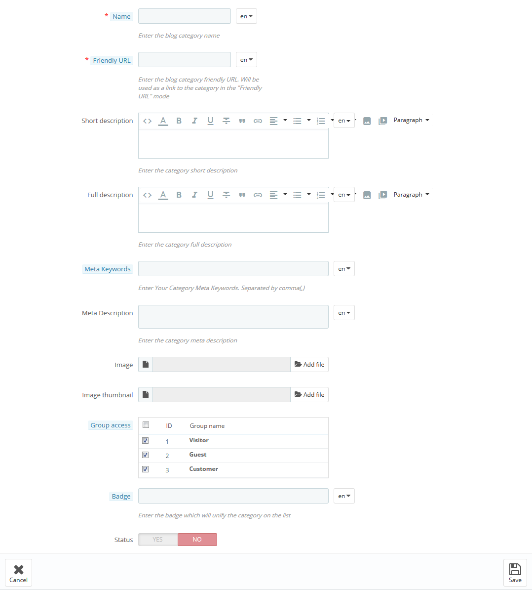
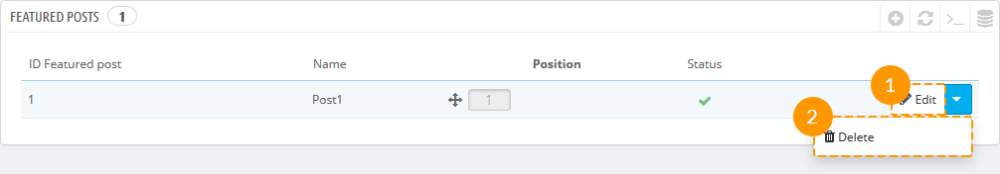
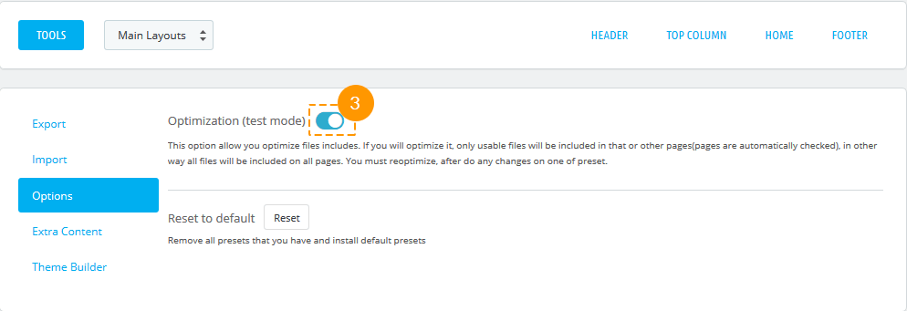
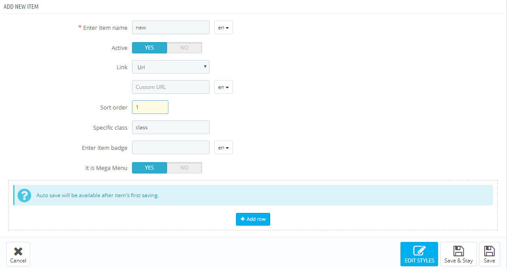
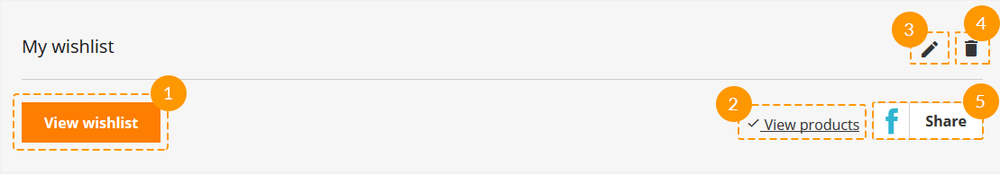

AMP is an open source library that provides a straightforward way to create web
pages.
The module allows improving the functionality of PrestaShop online store on mobile
devices and increasing the loading
speed of the web pages. It provides the opportunity to create web pages that are
compelling, smooth, and load near
momentary for users.
Installation and Deleting
The module can be installed and deleted like any other PrestaShop module.
Please note: for the correct operation of AMP module, it will
be desirable to activate SSL
Certificate, an essential component that provides a high-security lever for your data.
SSL/HTTPS sites are preferable for Google, giving them better indexing and position
in search results.
Module configuration
After the module has been successfully installed, you'll see the 'Configure' page that
includes 7 tabs with the
module settings.
AMP Pages Settings
You can easily create the AMP pages of the store homepage, category page, product page
and others. The module will
display the limited data of the pages and automatically affects the loading speed of
these pages on mobile.
Use "Full page" button - get back to the original view of the page.
Homepage - enable/disable AMP for the Homepage.
Category pages - enable/disable AMP for the Category Listing Page.
Manufacturer pages - enable/disable AMP for the Manufacturer Page.
Supplier pages - enable/disable AMP for Supplier Page.
Product Info - enable/disable AMP for Product Info Pages.
New products - enable/disable AMP for new products section on the
Homepage.
Bestseller products - enable/disable AMP for bestseller products
section on the Homepage.
Special products - enable/disable AMP for special products section
on the Homepage.
Search products - enable/disable AMP for the search by products on
the Homepage.
You can check how the AMPs look, clicking Preview
page in your admin
panel or just entering " /jxamp/ " at the end of the location bar (when
Friendly URL is enabled).
Homepage settings
You can organize the content of the AMP Homepage according to your preferences using the
available settings
below.
Homepage slider - show/hide slider block on the Homepage.
Sort order - set in what order the slider block will be displayed.
Featured Products - show/hide the featured products block on the
homepage.
Featured Products Carousel - choose whether to display featured
products block carousel on the
Homepage.
Number of Featured Products -set the number of featured products to
be displayed on the
Homepage.
Featured Products sort order - set in what order the featured
products block will be displayed.
New Products - show/hide the new products block on the Homepage.
New Products Carousel - choose whether to display the new products
block carousel on the
Homepage.
Number of New Products - set the number of new products to be
displayed on the Homepage.
New Products sort order - set in what order the new products block
will be displayed.
Special Products - show/hide special products block on the
Homepage.
Special Products Carousel - choose whether to display special
products block carousel on the
Homepage.
Number of Special Products - set the number of special products to
be displayed on the
Homepage.
Special Products sort order - set in what order the special
products block will be displayed on
the Homepage.
Bestseller Products - show/hide bestseller products block on the
Homepage.
Bestseller Products Carousel - choose whether to display bestseller
products block carousel on
the Homepage.
Number of Bestseller Products - set the amount of the bestseller
products that will be
displayed on the Homepage.
Bestseller Products sort order - set in what order the bestseller
products block will be
displayed on the Homepage.
Listing Settings
Organize the additional AMP listing settings.
Sort by:
name - sort the products by their names;
position - sort the products by their position;
price - sort the products by the price.
Sort Way:
asc - sort the products in ascending order;
desc - sort the products in descending order.
View more - enable/disable the "Read more" button on the listing
page.
Products per page - set the quantity of the products per listing
page.
Products Displaying Type:
list - present products vertically as a single continuous
element.
grid - present products in the form of the repeated pattern
of cells arrayed vertically
and horizontally.
Display image - show/hide product image in miniature.
Product Info Page
You can set some additional settings for AMP Product Info Page.
Extra images - display products' extra images on the product info
page.
Make your accelerated mobile pages trackable by enabling Google Analytics.
Status - enable/disable Google Analytics script.
Google Analytic Key - enter your Google Analytics ID.
Extra Styles
Allows adding custom CSS styles.
Main background color - the value can be set in any color format
(rgb, hex, etc.). You can
choose the color using the Color Picker tool.
JX Blog
Introduction
JX Blog module allows creating a blog in your PrestaShop store in order
to inform or educate the
customers with helpful innovative content for your eCommerce website. You can write
creative posts of new arrivals,
future collections and accompany them with entertaining images; publish your posts right
away or plan them to go
live
later.
JX Blog is the main module that contains the general settings for blog functionality.
There are additional JX Blog modules used to make the blog more functional:
JX Blog Comment module
improves the main JX Blog module with powerful comments system. It is used
to display and manage the comments added to the Blog posts.
The module is compliant with official PrestaShop General Data Protection
Regulation (GDPR) module, a
new EU legal framework that governs how users' personal data is used.
JX Blog Post Posts module
allows binding related posts to a post.
JX Blog Post Products module
allows binding related products to posts.
JX Featured Posts module
allows defining and setting posts as featured on the homepage of your
store.
Installation of the module
The module can be installed like any other PrestaShop module.
When the module has been successfully installed, the JX Blog menu tab will appear in the
main menu of your admin
panel.
There you can add/remove/edit categories and posts, manage the main settings of the
blog.
Categories
In order to create a blog post, firstly, it is necessary to create at least one
category.
In your PrestaShop admin panel, in JX Blog section at the bottom, choose
Categories menu (1). To create a new
category, press the 'plus' (2) button in the top right corner of the category
panel.
In the appeared form, you'll see the following options:
Name - the name of the blog category (mandatory).
Friendly URL - the blog category friendly url that will
be used as a link to the
category in the "Friendly URL" mode (mandatory).
Short description - brief description of the blog
category.
Full description - ample description of the blog
category.
Meta Keywords - keywords that will be used by search
engines for better SEO
optimization.
Meta Description - description of your blog category
used by search engines for
better SEO optimization.
Image - upload the image from your computer.
Image thumbnail - upload a smaller version of the blog
category image.
Group access - custom groups that can have the access to
this category.
Badge - enter the badge which will unify the category on
the list.
Status - enable/disable the category.

Click the 'Save' button and your category will appear in the list of available
categories.
In order to make changes to category, click the 'Edit' (1) button. In order to
remove the category, click the
'Delete' (2)
button below the 'Edit' button.
Posts
In your admin panel, under JX Blog section, choose Posts menu (1). To create a
new post, press 'plus' (2)
button in the top right corner.
Set the following options in the form that appears:
Post name - the title of the post (mandatory).
Friendly URL - the blog category friendly url that will
be used as a link to the
category in the "Friendly URL" mode (mandatory).
Short description - brief description of the blog
category.
Full description - ample description of the blog
category.
Meta Keywords - keywords that will be used by search
engines for better SEO
optimization.
Meta Description - description of your blog category
used by search engines for
better SEO optimization.
Post image - upload the image of the post (only .jpg
format is allowed).
Post thumbnail - upload the smaller version of the blog
post image (only .jpg format
is allowed).
Status - enable/disable the post.
Associated categories - the category, your post will be
associated to (mandatory).
Post tags - post tags to be included.
Publishing date - specify the publishing date of the
post.
Related posts - add the related posts.
Related products - add the related products.
Click the 'Save' button to save the settings. Now, your newly created post will
appear in the list of
posts.
If you need to make some changes with the post, click the 'Edit' button (1) next
to the needed post. To
remove
the post, click the 'Delete' (2) button.
Featured Posts
In your admin panel, under JX Blog section, choose Featured Posts menu (1). To
create a new post, press 'plus' (2)
button in the top right corner.
Set the following options in the form that appears:
Select post - choose the post(s) to be featured.
Set item position - choose the position of the featured
posts on the homepage.
Status - enable/disable the featured posts.
Click the 'Save' button to save the settings. Now, the chosen posts will appear
in the list of
featured posts on the Homepage.
If you need to make some changes with the featured post, click the 'Edit' button
(1) next to the needed post. To
remove
the post, click the 'Delete' (2) button.

Images Manager
If you need to optimize website images or upload image files for your blog, in JX Blog
section go to 'Images Manager'
(1) section.
In Images Manager (1) section you may add additional image types with specific dimensions
that will be used in your
blog
posts and customize them according to your needs.
To add a new image type, press 'plus' (1) button in the Images Manager
section.
Set the following options:
Name - the title of the image type (mandatory).
Width - image type width in pixels (mandatory).
Height - image type height in pixels (mandatory).
Categories - enable/disable this type for Blog
categories images.
Categories Thumbnails - enable/disable this type for
Blog categories thumbnails
images.
Posts - enable/disable this type for Blog posts images.
Post Thumbnails - enable/disable this type for Blog
posts thumbnails.
Blog users - enable/disable this type for not registered
Blog users.
Regenerate Images
In Regenerate images section you can generate new sizes for all previously uploaded
images or you can choose the
particular type
of the images you want to generate from the drop-down list.
Default Images
In Default Images section, you may set the following settings:
Default image - upload default image.
Categories default image - upload default image for categories.
Post default image - upload default image for posts.
Post thumbnail default image - upload default image for posts
thumbnails.
Users default image - upload default image for users.
Administrator icon - upload the administrator icon that will be
displayed in the comments.
Registered users icon - upload the icon for registered users
that will be displayed in the
comments.
Unregistered users icon - upload the icon for unregistered users
that will be displayed in
the comments.
Comments
You can stay in touch with your customers using JX Blog Comments module. In Comments
section, you can see the
comments from your customers or site visitors, reply on them, edit or delete them.
Settings
Main settings
You can manage the main settings for blog functionality.
You may set the following options:
Image regeneration - generate new sizes for images automatically
after each changing.
Display author - display the author of the post on the
frond-end.
Display views - show the post views.
Items per page - the amount of items that will be displayed in
listings.
'Posts to post' settings
The block is displayed on the post single page and is used to display the related
posts.
Settings:
Number of visible related posts - number of related posts shown
in the block.
'Products to post' settings
The block is displayed on the post single page and is used to display the related
products.
Settings:
Number of visible related products - number of related products
shown in the block.
Comments settings
Who can read comments? - choose which categories of the users
will be able to read comments
from
your blog.
Who can leave comments? - choose which categories of the users
will be able to leave
comments in your blog.
Moderation - choose who can leave comments without moderation.
Replying - choose who can reply to other comments.
Voting - choose who can vote for other comments.
Editing - choose from the drop-down list who can edit its own
comments.
Editing confirmation - choose who can edit own comments without
moderation.
Deleting - from the drop-down list choose who can delete its own
comments.
Deleting comments with replies - choose who can delete its own
comments which have replies.
Attachments - choose who can add attachments to comments.
Hashtags - choose who can use hashtags in comments.
Pinging - choose who can mention users in comments.
Navigation - choose who can see navigation above the comments
block.
Post on enter - enable/disable the possibility to post a comment
by pressing "Enter" button.
JX Compare Product
This module allows you to compare products.
Product comparison as a feature allows comparing two, three or more products at a
time.
Installation and Deleting
The module can be installed and deleted like any other PrestaShop module.
Module Settings
The main panel. Here you can set up the following options of the module:
Count product - the amount of products to be compared.
Display in footer - the ability to display the feature in footer
area.
Display in header info - the ability to display the feature in
header area of the page.
JX Deal of the Day
This module allows you to display the list of products with the discount countdown timer.
You can also add a timer to
products in the home page tabs,
on the category pages and single product pages.
Installation and Deleting
The module is installed and removed the same way as any other PrestaShop module.
Module Settings
After module installation you can add a product discount with the display period and a
discount countdown timer.
Adding/removing/editing blocks
In order to add a new product, press 'Add new' button
Select a product - select a product to apply the discount
and display a timer.
Status - item status.
Start Date - start date of the product discount period.
End Date - end date of the product discount period.
Label - product label.
Discount price - discount price (absolute or percentage
value).
After saving the item it appears in the list of items of this type.
In order to edit this item, press 'Edit' button.
In order to remove this item, press 'Delete' button.
If a special price valid for a certain period was set to the product previously,
this product can be added to
the module items list.
Product display configuration
In order to change product display mode, press 'Configuration'
button.
Then a form with product display configuration will appear.
Products to display - number of products to display in the
home page block.
Random products - random products display.
JX Header Account 2.1.0
This module displays login and registration forms on the website. It can take the
following positions: website
header, left and right column. The module allows to log in and register using such
social networks as Facebook,
Google+ and VK, which is convenient for website users. Registration or logging in
proceeds without reloading the
page.
The module is compliant with official PrestaShop General Data Protection
Regulation (GDPR) module, a
new EU legal framework that governs how users' personal data is used.
JX Header Account Main Panel
The main panel. Here you can set up the module.
Settings
There are the following settings in the module:
Display type - this setting allows to select the way to display the registration
form. It can take the
following values:
Drop-down - the form will display as a drop-down below the
button opening it.
Popup - the form will appear in a pop-up.
Left side - the form will appear from the left as a
sidebar.
Right side - the form will appear from the right as a
sidebar.
Display style after login - this setting allows to change the form view after
login/registration. You can use
the following values:
Two columns - the list is divided into two columns.
One Column - the list of links is displayed as one column.
Default avatar - this field appears only if the 'Display avatar' option is enabled.
Here you can select the
default user avatar.
Display avatar - this setting allows to enable or disable user avatar. If the user
logs in to the account on the
website with the help of one of the social networks, the avatar will be taken from
the account in this social
network, otherwise, the avatar, loaded by the website admin, will be displayed.
Use redirect - if this setting is enabled, user registration and password recovery
will take place on the
default PrestaShop registration/password recovery page.
Use Facebook Login - this setting allows enabling user registration and login
with the help of the Facebook
social network. When you enable this option, you will see the following
settings:
App ID - your account App ID from the Facebook developer
account.
App Secret - your app secret from the Facebook developer
account.
Use Google Login - this setting allows enabling user login and registration with
the help of the Google+ social
network. If you enable this option, you will see the following settings:
App ID - your App id from the Google developer account.
App Secret - your App secret from the Google developer
account.
Redirect URLs - your online-store url +
index.php?fc=module&module=jxheaderaccount&controller=googlelogin
Use VK Login - this setting allows enabling user registration and login with the
help of VK social network.
If you enable this option, you will see the following settings:
App ID - your App id from your VK developer account.
App Secret - App secret from your VK developer account.
Redirect URLs - your online-store url +
index.php?fc=module&module=jxheaderaccount&controller=vk
VK - to get App ID and App Secret register your app at https://vk.com/dev.
JX Mega Layout 1.5.0
The module allows building multiple homepage layouts (presets) for hooks. This module
advantage is
allowing you to create different hook markups and modify them up to
your needs.
Module requirements
PrestaShop 1.7+
PHP 5.4+
Hooks
The module has 5 hooks available by default:
'Header' is a hook that combines such standard hooks: displayTop,
displayNav, displayNav1,
displayNav2. This
hook corresponds to the
website header.
'Top Column' corresponds to the displayTopColumn and
displayNavFullWidth hooks. This hook
comes right after the Header hook.
'Home' corresponds to such hooks: displayHome, displayWrapperTop,
displayWrapperBottom,
displayContentWrapperTop, displayLeftColumn, displayRightColumn. This hook is
present only on the main page.
'Footer' corresponds to the displayFooterBefore, displayFooter and
displayFooterAfter hooks.
'Product Footer' corresponds to the original displayFooterProduct
hook, which is displayed in
product page
footer.
Integrating module to the theme
Integrating module to the THIRD-PARTY theme your presets won't be displayed at the frontend without this step.
NOTE: for third-party sources only if JX Mega Layout module is not included by default. The codes below have already been integrated into ZEMEZ template.
Header. In order to add custom preset to the Header hook, you need to perform the
following steps:
Open the /templates/_partials/header.tpl file for editing.
After JX Mega Layout module installation, you can configure it by clicking the Configure
button (2).
JX Mega Layout Main Panel
Main Layouts
The main JX Mega Layout module configuration panel allows you to add a preset to the
required hook and configure
the preset.
Adding the preset
Press '+ Add a Preset' (1) in the needed tab.
Next, fill in the 'Enter layout name' field in the popup typing the new preset
(2) title there and press
'Save' (3).
Preset was successfully created, it's listed among the available presets (4) now.
Newly created preset is
selected for editing (5).
Preset activation
First of all, select the needed preset from the list (1).
Press the 'Use as default' (2) switcher.
The preset was activated. If you need to display this preset only on some pages,
open the drop-down (3) and
select the pages you need. To apply changes, click outside the list area. A
preset that is displayed on all
pages will be marked with a filled star in the presets list, and the one that is
displayed only on some
pages will be marked with a partially filled star.
Removing the preset
There is no option to restore the preset after removing.
In order to remove the preset, choose the required preset among the list (1).
Next, press a cart (2) near the preset title.
Preset was successfully removed.
Renaming the preset
In order to rename the preset, choose the required preset among the list (1).
Next, press a pencil icon (2) next to the preset title.
Specify the new preset title (3) in a popup and press 'Rename layout' (4).
Preset was successfully renamed.
Wrapper
Wrapper has no class by default, it's not a mandatory item.
Adding the wrapper
In order to create a wrapper, press '+ Add wrapper' (1).
Wrapper was added (2).
Adding the custom CSS class to the wrapper
Adding the custom class will let you create a specific styling for your wrapper by using
CSS rules.
In order to add wrapper class, press the button (1).
You'll see a pop-up window, fill in the 'Enter wrapper classes' (2) field there
and press a 'Confirm' (3)
button.
Custom class was added successfully.
Deleting the wrapper
Deleting the preset item will also cause all of its child items and their styles removing.
In order to remove the wrapper, press the cart button (1).
Wrapper was removed successfully.
Styling the wrapper
In order to add custom styles to the wrapper, press the 'pencil' (1) icon in the
wrapper block.
In the following pop-up window fill in all the needed fields (you may refer to
the documentation 'Styling'
section), and press 'Save' (2) button.
If all the fields are filled in correctly, styles will be saved.
Row
Row item from the Bootstrap grid. It's a required item.
Adding the row
In order to insert a new row, press '+ Add row' (1) into the wrapper block, or '+
Add row' (2) in the main
preset block, or '+ Add row' (3) in the column drop-down list.
The row was added successfully.
Adding custom CSS class to the row
Custom class adding allows you to create custom row styling using CSS rules.
In order to add the class to the row, you should press the 'ellipsis' button
(1).
Choose the 'Edit row' (2) in a drop-down list.
Fill in the 'Enter row classes' (3) field in the pop-up window and press
'Confirm' (4) button.
Custom class was added successfully.
Deleting the row
Removal of preset item will also cause removal of its child items and their styles.
In order to remove the row, open the menu (the 'ellipsis' icon) in the row
block.
Choose 'Delete' (2) option in the drop-down.
The row was successfully removed.
Adding styles to the row
In order to add row styles, open the menu (the 'ellipsis' icon) (1) in a row
block.
Press 'Stylize' (2) in the drop-down.
You will see the pop-up window, fill in all the needed fields there (you may
refer to the documentation
'Styling' section) and press 'Save' (3) button.
If all the fields are filled in correctly, styles will be saved.
Column
It is an item with configurable block width for different dimensions, based on Bootstrap
grid.
Adding the column
In order to insert a column into a needed 'row', open the menu (the 'ellipsis'
icon) (1)
Choose the '+ Add Col' (2) among the list.
Fill in the fields (col*, col-sm*, col-md*, col-lg*, col-xl*, col-xxl* - in
accordance with bootstrap 4
requirements) in the pop-up window and press
'Confirm' (3) button.
The column was added successfully.
Removing the column
Preset item removing will also cause its child items and their styles deleting.
In order to remove the column, open the menu (the 'ellipsis' icon) in a column
block (1)
Press 'Delete' (2) in the list.
The column and all of its child items were removed.
Editing the column
In order to edit the column, open the menu (the 'ellipsis' icon) (1) in the
column block.
Press 'Edit column' (2) in the list.
Fill in the fields (col*, col-sm*, col-md*, col-lg*, col-xl*, col-xxl* - in
accordance with bootstrap 4
requirements) in the pop-up window and press
'Confirm'.
The column was successfully edited.
Adding styles to the column
In order to add column styles, open the menu (the 'ellipsis' icon) (1) in a
column block.
Press 'Stylize' (2) in the list of options.
You will see the pop-up window, fill in all the needed fields there (you may
refer to the documentation
'Styling' section) and press 'Save' (3) button.
If all the fields are filled in correctly, styles will be saved.
Module
Module assigned to this hook.
Adding the module
Be careful when adding modules to the preset, some modules are desirable to use if they do not change the visible layout, e.g., 'Data mining for statistics' module.
In order to add the module to the preset in a column block, open the menu (the
'ellipsis' icon) (1).
Press the '+ Add Module' (2) in the list of options available.
If needed, you can enter the custom class (3) in the pop-up window and select the
module (4), next press
'Confirm' (5).
The module was successfully added.
In this version of JX Mega Layout you can add 'Homepage tabs' module in Home
hook.
It can also be customized like all other modules in Mega Layout.
Deleting the module
Removal of preset item will also cause removal of its child items and their styles.
In order to remove the module, open the menu (the 'ellipsis' icon) (1) in the
module block.
Press 'Delete' (2) in the list of options available.
The module is removed.
Adding custom class to the module
Custom class adding allows to create module styling using CSS rules.
In order to specify custom class for the module, open the menu in the module
block (the 'ellipsis' icon)
(1).
Press 'Edit Settings' (2) then.
Specify custom class (3) in the pop-up window and press 'Confirm' (4) button.
Custom class was added.
Extra content
Additional custom content in any position.
Adding extra content
In order to add extra content in a column block, open the menu (the
'ellipsis'icon) (1).
Press 'Add Extra content' (2).
The pop-up window will appear. Specify the custom class (3), if needed. You need
to select the content
type (product or post) (4) and identify product ID number (5). Press 'Confirm'
(6) button.
Extra content was successfully added.
Deleting extra content
To remove the extra content, open the menu (the 'ellipsis' icon) (1) in the
corresponding block.
Press 'Delete' (2) button.
Adding custom class to the extra content
In order to add the custom class for the extra content, open the menu in the
corresponding block (the
'ellipsis' icon) (1).
Press 'Edit settings' (2) button.
Specify the custom class in the appeared pop-up window. Press 'Confirm'
button.
Custom CSS class was added.
Logo, Copyright
Logo and Copyright blocks are edited the same way as modules, except for the fact that
Logo can be placed only in
Header or Footer position, and the Copyright block can be placed only in Footer
position.
Presets export
Export tool allows you to export presets for the further import into different shops.
Navigate to the 'Tools' (1) tab in the main configurations panel.
Choose 'Export' (2) in the form.
You'll see the list of the existing presets in site hooks.
In order to preview the preset, press 'Layout preview' (3) button next to the
preset you need, in order to
export, please press 'Export layout' (4) button.
Then you'll be able to download this preset as a zip archive.
Preset import
Import tool accepts only the presets *.zip files that were previously generated with the same module Export tool.
In order to import your preset, you should open the Tools (1)
tab and choose 'Import'
(2).
Next, press the Add file (3) button and select the zip file of
your exported preset. In case
this archive is the exported preset, you will see this preset preview.
If this preset meets your needs, press 'Import' (4). The preset
will be imported and added
to the list of available presets.
Reset
'Reset' reverts all the presets to initial state (to the way they came with the
template), and discards all the
created presets.
Attention! After reverting presets to default state, all the custom presets will be discarded!
To reset presets, navigate to the 'Tools' (1) tab. In the appeared block open the
'Options' (2) tab.
Press the 'Reset' button.
That's it! All presets are reset to initial state.
Styles and Scripts Optimization
Styles and scripts optimization adds exclusions for modules in Header section, based on
their use in presets. This
allows speeding up the page loading speed. Optimization works in test mode.
Enabling optimization:
To enable optimization, open the 'Tools' (1) tab and select the 'Options' (2)
tab.
In the appeared window, you can enable optimization (3).

If optimization is enabled when editing and enabling presets, optimization gets
discarded, but you'll see a window
offering to run optimization. There is no need to optimize scripts and styles every time
you change presets. It's
better to optimize them when you're done editing.
Styling
Background styles. Fields description:
background-image (background image) - the image URL or 'none' value. The
image is picked from the
~/images/cms/ folder.
background-color (background color) - the value can be set in any color
format (rgb, hex, etc.). You can
choose the color using the Color Picker tool.
background-repeat (background repeat) - all the available options are listed
in the radio buttons.
background-position (background position) - all the available options are
listed in the drop-down.
background-size (background size) - all the available options are listed in
the drop-down.
background-origin (background image positioning region) - all the available
options are listed in the
drop-down.
Border styles.
border-top-style, border-right-style, border-left-style, border-bottom-style
(border styles) - all
the available options are listed in the drop-down.
border-top-width, border-right-width, border-left-width, border-bottom-width
(borders width) - should be
set in pixels.
border-top-olor, border-right-color, border-left-color, border-bottom-color
(borders color) - the value
can be set in any color format (rgb, hex, etc.). You can choose the color
using the Color Picker Tool.
border-top-right-radius, border-top-left-radius, border-bottom-right-radius,
border-bottom-left-radius
(border radius) - should be set in pixels.
In order to remove items styles, open the items styling section and press 'Clear
styles' (1)
Extra content
On the module base there is the ability to create one of the available content types
(HTML block, Banner block,
YouTube block or Slider block) blocks and, also, output the products or posts as slides.
You can also Export all the
extra content you have created in one click only or import it from your computer.
In order to add extra content, you should open the Tools (1) tab and choose
'Extra content' (2.)
Press 'Add content' button.
There are 4 available types of content that you can create: HTML block, Banner
block, Video block, Slider
block.
Extra HTML content
To create extra HTML content, press 'Create HTML block' tab.
In the form that appears, fill in the required fields.
Enter HTML item name
HTML block name, is mandatory to be filled in for the default
language.
HTML content
HTML content.
Enter Specific Class
block CSS class.
To delete HTML block, press 'Remove' (1) button. In order to edit block, press
'Edit'(2) button.
Extra Banner content
To create extra Banner content, press 'Create Banner block' (1) tab.
In the form that appears, fill in the required fields.
Enter Banner item name
banner title, is mandatory to be filled in for the default
language.
Enter Banner item link
a link that is assigned to this banner.
Add banner image
upload an image for the banner.
Banner content
set the content of the banner.
Enter Specific class
block CSS class.
To delete Banner block, press 'Remove' (1) button. In order to edit block, press
'Edit'(2) button.
Extra Video content
In order to create extra Video content, press 'Create Video block' (1) tab.
In the form that appears, fill in the required fields.
Enter Video item name
the title of the video (mandatory).
Preview
the video will be displayed before it will be published.
Enter Video item URL
add video link in the YouTube video format.
HTML content
the field where some HTML content can be added.
Enter Specific Class
block CSS class.
To delete Video block, press 'Remove' (1) button. In order to edit block, press
'Edit'(2) button.
Extra Slider content
In order to create extra Slider content, press 'Create Slider block' (1) tab.
In the form that appears, fill in the required fields.
Enter Slider item name
the title of the slider (mandatory).
Slider description
set the description of the slider.
Enter Specific class
block CSS class.
Slides
the content of the slide: html, banner, video, product, post.
Visible items
the number of visible items (mandatory).
Items scroll
the number of items changed with one scroll (mandatory).
Slide margin
the carousel list item margin (mandatory).
Slider speed
speed of changing speed (mandatory).
Auto scroll
turns on/off slider autoplay.
Pause
pause between scrolls (if 'Auto scroll' is enabled).
Slider Loop
allow repeating slides from the beginning after all the slides were
shown.
Pager
show/hide slider pagination.
Controls
show/hide slider navigation.
Auto height
slides height.
To delete Slider block, press 'Remove' (1) button. In order to edit block, press
'Edit'(2) button.
Export content
You may export all the extra content you've created to your computer as a zip file with
one click only.
To download extra content, simply press "Export content"(1) tab. The downloading
process will start
automatically.
Import content
You can also import your own custom content from your computer, but zip files only!
To upload extra content, press "Import content" tab.
Press "Add file" (1) button and upload from your computer archive that contains
extra content only.
Theme Builder
You may create different variations of the child themes on the parent theme basis with
the help of Theme Builder
option.
To create a child theme, click the "Add new child theme" button.
In the appeared window, fill in the "Theme public name" and the "Theme name".
Theme public name - the public theme name will be displayed
in the admin panel (the
given name you won't be able to change).
Theme name - the name theme (the given name you won't be
able to change).
Choose the variants of "Catalog Page", "Product Info Page" and "Quick View
Page" from the
available below.
Click the "Save" button to save the changes.
The successfully created child theme will appear on the list. You may edit the child
theme simply hovering the
preview image and clicking "Modify this child theme" button. You can change the
variants of Catalog, Product
Info, and Quick View Pages.
Warnings
If the following message appears in the module item block, you should enable the
mentioned module.
If the following message appears in the module item block, you should install the
mentioned module.
In case you remove or deactivate the 'JX Mega Layout' module, all the active presets will
be disabled and you will
see the positions (hooks) in their original appearance.
JX Mega Menu
The module is designed to create complex menus. The module provides the ability to
display one item (without
sub-menu), a menu item with a sub-menu and a menu item with sub-menu by means of a
multi-row and multi-column
block. The module can be used in different positions, but it will display the same
content. Available positions:
top (displayTop), left (displayLeftColumn), right (displayRightColumn), footer
(displayFooter). You can add
categories (with subcategories), CMS categories (with subcategories), manufacturers (one
or a list), suppliers
(one or a list), stores (if multistore is used), links to any product, information block
about the product,
custom links (not limited in quantity), custom HTML blocks (not limited in number) and
banners. See below
for more details.
The module includes 6 main tabs that allow to customize the menu.
JX Mega Menu Items
JX Mega Menu items are the basic items which appears in the menu.
In order to create a new item, open the JX Mega Menu module and click Add item button
from the top menu or click "+" button in the top right of the table.
In the form that appears, fill in the required fields.
Enter item name
the tab title which is mandatory to be filled in for the default language,
if the additional
languages fields are not filled in, the tab takes its name from the default
language.
Active
active/inactive tab.
Link
a link that is assigned to this tab. You can enter a custom link, or choose
from existing options
(categories, CMS categories). If you leave the field blank, the link of this
tab is inactive.
Sort order
the order of tabs to be displayed.
Specific Class
the class which is added to emphasize the item (CSS class).
Enter item badge
is filled in depending on multi-languages.
It is Mega Menu
given tab sub-menu is a Mega Menu.
*
Use simple menu
given tab sub-menu is a simple menu.
**
*
It is Mega Menu. If this option is selected, there will be a form to create a complex
menu (Mega Menu).
**
Use simple menu. If this option is selected, there will be a form to create a simple
menu. This is a menu that
displays the selected content in a single column. If the menu has embedded content, the
new column is added.
Complex menu consists of rows and columns in rows.
The Row is a part of the Mega Menu structure. It includes the menu
columns. The existing row can be
removed by
clicking the appropriate button. The row will be removed with the content it includes.
The rows quantity is not
limited.
The Column is a part of the Mega Menu structure, which is placed inside
the rows. (The Class) The
width of the
column cannot be less than 2 and more than 12. In order to make the menu display
properly, the total column
width cannot exceed 12. The width (class) is a Bootstrap column type, corresponds to the
same values.
In order to create the menu, click the 'Add row' button.

In the form appeared, click 'Add column' button.
In the pop up window you need to specify the column class (from 2 to 12). The column
itself appears
next where you need to set the required settings.
Here you can change the column class, CSS class and the content from the list provided.
You
can add/remove content by double clicking the item, or by highlighting the items and
clicking the
corresponding button.
Block can be removed by clicking 'Remove block' button in the footer of
the block.
By removing the row, the included columns are also removed.
In order to move the content available in the selected menu, double-click or highlight
the desired content and
press the corresponding button.
Inactive menu information is saved while switching between menu types and you can always
change the type of
menu.
JX Mega Menu HTML
In this section we will explain how to create a custom HTML block in the Mega Menu.
The module has a table listing all the available blocks. You can also add a new block by
clicking the '+' button
in the top right of the table.
In the form that appears, fill in the required fields.
Enter HTML item name
HTML block name, is mandatory to be filled in for the default language.
Specific class
block's CSS class.
HTML content
HTML content.
Added block will appear in the list of blocks, as well as in the list of available
content while creating menu
blocks.
JX Mega Menu Links
In this section we will show how to create custom links in the Mega Menu.
The module has a table listing all the available links. You can also add a new link by
clicking the '+' button
in the top right of the table.
In the form that appears, fill in the required fields.
Enter Link name
link name, is mandatory to be filled in for the default language.
Enter Link URL
link URL, is mandatory to be filled in for the default language.
Specific class
block's CSS class.
Open in new window
open link in a new window.
Added link will appear in the list of links, as well as in the list of available content
while creating menu
blocks.
JX Mega Menu Banners
In this section we will explain how to create banners in the Mega Menu.
The module has a table listing all the available banners. You can also add a new banner
by clicking the '+'
button in the top right of the table.
In the form that appears, fill in the required fields.
Select a file
select a file, is mandatory to be filled in for the default language.
Enter Banner name
banner title, is mandatory to be filled in for the default language.
Enter Banner URL
link URL, is mandatory to be filled in for the default language.
Specific class
block's CSS class.
Public Title
public banner title.
Description
set the description of the banner.
Open in new window
open link in a new window.
Added banner will appear in the list of banners, as well as in the list of available
content while creating menu
blocks.
JX Mega Menu Video
In this section we will explain how to add a video in the Mega Menu.
The module has a table listing all the available videos. You can also add a new video by
clicking the '+'
button in the top right of the table.
In the form that appears, fill in the required fields.
Enter Video Name
video title (the field is required).
Enter Video URL - add video link in the formats described below:
If this is a YouTube video, click on Embed and copy the
code between the quotes for https://www.youtube.com/embed/video_id
If this is a Vimeo video, click on Share icon and in the
Embed section copy the source code between the quotes for
http://player.vimeo.com/video/video_id
Added video will appear in the list of videos, as well as in the list of available
content while creating menu
blocks.
JX Mega Menu Map
In this section we will explain how to add a map in the Mega Menu.
The module has a table listing all the available maps. You can also add a new map by
clicking the '+'
button in the top right of the table.
In the form that appears, fill in the required fields.
Enter Map item name
the title of the map.
Enter Map latitude
set a latitude value.
Enter Map longitude
set a longitude value.
Marker
adding a custom marker.
Enter Map scale
the scale of the map (used 8 by default).
Map description
set the description of the map.
Added map will appear in the list of maps, as well as in the list of available content
while creating menu blocks.
JX Newsletter
The module displays a notification with a proposal to subscribe to store newsletter
in a pop-up window. The email check can be enabled in module settings by means of
confirmation email. You can also adjust the timeout between reminders for registered
and non-registered users. Registered users can permanently give up on reminders.
The module is compliant with official PrestaShop General Data Protection
Regulation (GDPR) module, a
new EU legal framework that governs how users' personal data is used.
Module install/uninstall
This module can be installed/uninstalled like any other PrestaShop module.
Module settings
After module has been installed you can set Registered User Settings and Guest Settings
below.
There are the following settings that you can set for Registered Users.
Live mode - enable/disable the module.
Verification email - choose if you want to send a verification
email after the subscription.
Popup title - write down a newsletter popup title.
Popup message - write down a newsletter popup message.
Timeout for customers - set a timeout for popup reminding
subscription for customers.
First delay - set a time that the user should spend on the site to
see popup for the first time.
Here you can set the settings for Guests.
Live mode - enable/disable the module.
Verification email - choose if you want to send a verification
email after the subscription.
Popup title - write down a newsletter popup title.
Popup message - write down a newsletter popup message.
Timeout for guests - set a timeout for not registered users.
First delay - set a time that the guest should spend on the site to
see popup for the first time.
It is necessary to install and enable 'Newsletter block' for proper work of module.
JX Product List Gallery
This module displays all the available product images in form of a gallery on product
listing pages. Depending on
what settings you choose, the module can display images in form of a rollover or
slideshow.
Module Installation and Deleting
This module can be installed and deleted like any other PrestaShop module.
Module settings
After the module is installed, navigate to
\themes\classic\templates\catalog\_partials\miniatures\product.tpl. Open this
file and find the following code:
and replace it with:
After installing and connecting the module, you can set it up on the module configuration
page.
The module has the following main settings:
Live mode - ability to use the module in live mode.
Type - select display type: rollover, gallery or slideshow.
If you choose rollover, you can choose the animation effect:
Animation type:
Opacity slide - opacity changes;
Horizontal slide - horizontal;
Vertical slide - vertical.
If you choose gallery, you will find the following settings available:
Display items - the number of items displayed;
Visible items in row - the number of items in a row;
Use carousel - enable/disable the carousel for this block.
If you choose slideshow, you will find the following settings available:
Display items - the number of items displayed;
Use pager - pager display in slide show;
Use controls - controls display in slide show.
JX Product Zoomer
This module is an alternative solution for the standard product image zoom on the single
product page. It's fully compatible with the standard additional products thumbnail
carousel and product attributes changes. It allows you to choose among the three
available options (window/lens/inner) for image zoom with the advanced plugin settings.
The module is based on the Elevatezoom Plus plugin.
Installation and removing
The module is installed and deleted like any other Prestashop module.
Module configuration
After the module has been installed you can configure it on the module configuration
page.
By default the configuration page shows the simplified set of options.
Live mode - module is on/off.
Fancybox - whether to show the enlarged image in the Fancybox on
click.
Change image on hover - switch the main image on thumbnail hover
(by default is set to switch on click).
Responsive - allows to the use adaptive functionality for plugin
display on the mobile devices.
Zoom Type - choose the type of the enlarged image display mode
window - the enlarged image shows up next to the main image
in one of the available (16) positions
lens - the image is zoomed in the lens container, on top of
it
inner - the image is zoomed inside of main image container,
fully covering it.
The mobile devices (< 768) have "lens" mode activated instantly.
Extended settings - enables advanced settings for the experienced
users. You can see the link to the official
documentation for more details next to it.
Extended module configuration
Scroll Zoom - zoom ratio change on the mousewheel scroll
(available for all types).
Cursor - cursor type on the magnified image hover. The following
options are available: default, cursor, crosshair (available for all types).
Zoom settings - available for all types, if the 'Scroll Zoom' is
enabled.
Zoom Window Fade In - the effect of slowing the window
appearance
Zoom Window Fade Out - the effect of slowing the window
disappearance
Border Size - window border width in px
Border Color - window border color
Zoom Lens - zoom lens (available for window, lens).
Zoom Lens - on/off
Lens Shape - lens type. It can take the following values:
circular/rounded or squared/rectangular
Lens Color - lens inner background color
Lens Opacity - lens inner background opacity
Lens Size - lens size in px
Lens Fade In - the speed of lens appearance effect
Lens Fade Out - the speed of lens disappearance effect
Lens Border - lens border width
Lens Border Color - lens border color
Contain Lens Zoom - the restriction of the lens overflow
outwards the main image container
Tint - the shade effect on the area outside the lens (available for
window).
Tint - effect on/off
Tint Color - the lens outer area background
Tint Opacity - the lens outer area opacity
Tint Fade In - the appearance effect speed
Tint Fade Out - the disappearance effect speed
If you switch the zoom type, advanced options set is changed
accordingly to show only the available parameters for the type selected.
Be careful when editing the extended settings. If the
settings are set incorrectly, the effect can be ugly.
JX Search
This module is an extended search version that allows you to select a specific category
for searching within its
content. You can also change the category after defining the query. It also provides a
possibility to set the
additional product information display (description/price/manufacturer, etc.), and
define the search results
container layout, e.g., you can divide the results into a few sections with the controls
(pagination,
next/previous/show all). All the module settings are available in main admin panel.
Installation and Deleting
The module is installed and deleted like any other Prestashop module.
Module configuration
After module has been installed you can set it up on the module configuration page.
Enable Ajax Search - enables live search in a dropdown.
Minimum query length - number of symbols to start the result
display.
Search in children category - enable/disable searching in children
categories.
Number of shown results - number of products that shows up in the
results section (number of
products per page for the "pager" or "navigation" mode).
Display "Show All" button - displays the 'Show all' button below
the results section,
the click on it displays all found results.
Display pager - divides results into pages (depends on the 'Number
of shown results' field
value) and displays links to them.
Display navigation - shows the Previous/Next buttons.
Position of navigation - hook(s), to show the navigation
(top/both/bottom options are
available).
Highlight query result - highlights the text that matches search
query.
Display image in Ajax search - shows product images in the results
section.
Display description in Ajax search - shows product description in
the results section.
Display prices in Ajax search - shows product price in the results
section.
Display reference in Ajax search - shows product reference in the
results section.
Display manufacturer in Ajax search - shows product manufacturer in
the results section.
Display suppliers in Ajax search - shows product suppliers in the
results section.
Blog search - enable/disable search by blog posts.
Some parameters might differ depending on the combination used.
JX Security Pack
JX Security Pack is a set of modules that allows improving the shop's safety. It brings the best security settings
that you can see on your website. The module enables safety by lowering the risks of usage of different web
application vulnerabilities.
Introduction
JX Security Package includes:
JX Security Panel - provides a high level of online store protection.
JX Security User - helps to control users activity.
JX Security Watermark - allows safeguarding images from unauthorized use.
JX Security Panel
JX Security Panel module is used to increase the level of store protection. It blocks the possibility of publishing
content, editing the URL in the attempt to copy it.
Module Installation
install the module navigate to Admin panel -> Modules -> Modules and Services section, find the JX Security Panel module
and click the Install' button (1).
Content Configuration
After the successful module installation, the main settings page will appear.
The main module menu includes: Content and Watermark settings.
On the "Content" (1) page you can set the following main settings:
Disable context menu by right-clicking - the ability to disable the click with a right mouse
button.
Disable text selection with the mouse - the ability to disable text selection.
Disable Drag&Drop - enable/disable the drag and drop option.
Prevent Hotlinking - the ability to prevent image hotlinking.
Copyright - add copyright (or simple text) to copied text from your resource.
It is possible to enable/disable the following Hot Keys.
Disable copy text - allow/prohibit the ability to copy some text using Ctrl+C, Ctrl+Insert
hotkeys.
Disable cut text - allow/prohibit the ability to cut the text using Ctrl+X hotkey.
Disable past text - allow/prohibit the ability to insert the text using Ctrl+V hotkey.
Disable select all content - allow/prohibit the ability to select all the content for copying
using Ctrl+A hotkey.
Disable search - enable/disable the search option using Ctrl+F or F3 hotkeys.
Save page - enable/disable saving page option with the help of Ctrl+S.
Print page - enable/disable printing page (or calling the print dialog) using Ctrl+P hotkey.
Disable Help - enable/disable the Windows Help function using the F1 hotkey.
Disable developer tools - enable/disable developer tools using Shift+F7 to open Style Editor;
Ctrl+Shift+C to inspect Element; Ctrl+Shift+I or F12 to open/close toggle Inspector.
Disable page source - enable/disable the ability to view the HTML code of the current page
using Ctrl+U.
Disable reload page - enable/disable F5 and Ctrl+R hotkeys to be able to refresh the page.
Disable reload page with cache - enable/disable Ctrl+F5 and Ctrl+Shift+R hotkeys to refresh the
page and cleaning cache simultaneously.
Watermark
To add a watermark to images, click the Watermark tab (1) and set the necessary options.
Watermark file - upload a watermark file from your computer (in GIF format only).
Watermark opacity (1-100) - the opacity of watermark file. The default setting, 60, is usually
a
good compromise.
Watermark X align - select where your watermark should appear on the images, here on the
horizontal axis.
Watermark Y align - select where your watermark should appear on the images, here on the
vertical axis.
Choose image types for watermark protection - you may choose different image types to which the
watermark should be applied by ticking them.
Once, you have saved the settings, go to Design -> Image Settings
section. There, click the "Regenerate thumbnails" button at the bottom of the page.
Now, your watermark image will appear on the types of pictures that you have selected.
JX Security User
JX Security User module is used to monitor the activity of the users and block them if it is needed.
Installation and Deleting
The module can be installed and deleted like any other PrestaShop module.
Module Configuration
After the module has been installed, the 'Settings' page will appear.
The module includes 6 main tabs: Customers and Visitors online, Login fail, Black list, Ban list, and Settings.
Customers online - the ability to view the list of all users who are currently registered on
your site.
Visitors online - the ability to see the information about the visitors of your site at the
moment.
Login fail - monitoring of failed login attempts, with the ability to view the user's IP
address, the username and the date/time of the failed login attempt.
Black list - users ban by IP address or range of IP addresses.
Ban list - the ability to view a list of all blocked users in the table form, with the
opportunity to unlock individual IPs or group of IP addresses.
Settings - additional settings to secure the store:
Maximum number of attempts before blocking.
Maximum number of attempts before disconnecting.
Maximum number of attempts before sending a message to the administrator.
JX Security Watermark
JX Security Watermark module is used to leave watermarks on the pictures in order to increase the level of
the store protection.
Installation and Deleting
The module can be installed and deleted like any other PrestaShop module.
Module Configuration
Watermark file - upload a watermark file from your computer (in GIF format only).
Watermark opacity (1-100) - the opacity of watermark file. The default setting, 60, is usually
a good compromise.
Watermark X align - select where your watermark should appear on the images, here on the
horizontal axis.
Watermark Y align - select where your watermark should appear on the images, here on the
vertical axis.
Choose image types for watermark protection - you may choose different image types to which the
watermark should be applied by ticking them.
Once, you have saved the settings, go to Design -> Image Settings
section. There, click the "Regenerate thumbnails" button at the bottom of the page.
Now, your watermark image will appear on the types of pictures that you have selected.
JX Wishlist
JX Wishlist module is created to give the ability to the visitors of online store to add
products to wishlists
and share these wishlists on Facebook.
The module is compliant with official PrestaShop General Data Protection
Regulation (GDPR) module, a
new EU legal framework that governs how users' personal data is used.
Module Installation
install the module navigate to Admin panel -> Modules -> Modules and Services, find
the JX Wishlist module and press 'Install' button (1).
Module Configuration
After the module has been installed, the 'Settings' page will appear.
Add the Facebook App Id to the required field (1) and press 'Save' button (2).
The instruction how to get the Facebook App Id can be found here: Creating
an App ID.
Using JX Wishlist Module
Adding product to wishlist
Shop visitors should be logged in to be able to add the items to
the wishlists.
After the module is installed, the button 'Add to wishlist' appears on each
product page. It should look
like on the screenshot below (1).
After clicking this button a shop visitor will see a notification: 'The product
was successfully added to
your wishlist.' It can be closed or skipped to wishlists view by clicking 'My
wishlists' button
(2).
Browsing Wishlists
On 'My Wishlists' page a client can add the new wishlist (1) or view the list of
created ones (2).
Clicking 'View wishlist' button (1) will open the wishlist page, the 'View
products' button (2) gives the
ability to see the products list of this wishlist on current page.
The title of wishlist can be edited (3) or deleted (4).
To share the wishlist the visitor should press the 'Share' button (5).

While looking through the items in wishlist after clicking 'View products'
button, each item can be removed
from the list (1).
Sharing Wishlists
To share the wishlist the visitor should press the 'Share' button. There will be a few
easy steps to follow before
posting the wishlist. During each step, there's an ability to go back and change the
sharing options.
First step is to choose the layout for wishlist that will be posted.
Then the products should be added. Each cell with a '+' is a button to add the
product image.
Choosing the images of each product:
When all images are added, the visitor should press the 'Share' button (1).
In a small window which is then appeared, there will be some standard posting
options to choose and the
ability to add some text to the post. After clicking 'Post to Facebook' button,
the post will be
published.
Statistics
Using this module you can also get the statistics collected while the products are added
to wishlists. Thus, you
will know which products are currently popular. This information can be very useful for
suggesting a discount, for
example.
You can view the statistics navigating to Admin panel -> Stats -> Stats -> JX Wishlist.
You can select the period for viewing the statistics from the specified time (1).
In the first column, there's a number of products that were added (2).
The second column is created for your convenience. You can use it to see how many of
added products were sold
(3).